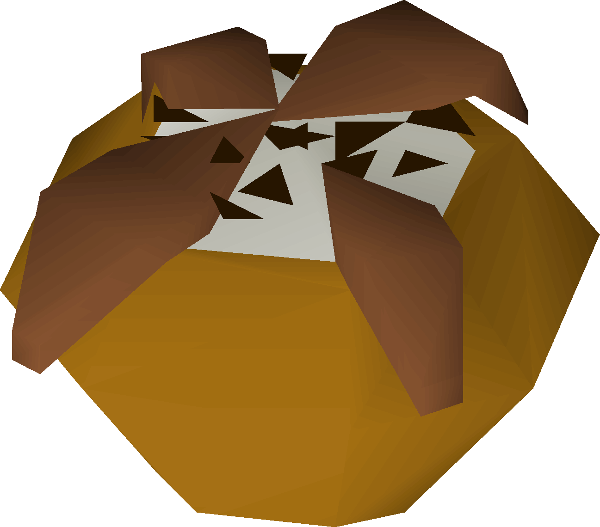

Chocolate Bomb

Description
Chocolate bomb is a gnome dish that can be made at level 42 Cooking. The premade version is sold in the food shop in the north-west corner of the 2nd floor[US] of the Grand Tree for 160 coins, with 3 in stock. It heals 15 Hitpoints and can be eaten in the same game tick as another food if clicked immediately after the other food (thus if eaten with a shark, you can heal 35 hitpoints with the same delay eating just one shark would produce). Like all gnome foods, they stop burning at level 38 Cooking. This means that Chocolate bombs are never burnt.
Ingredients
- 1x Gnome Mould
- 1x Gianne Dough
- 1x Equa Leaves
- 4x Chocolate Bar
- 2x Pot of Cream
- 1x Chocolate Dust
Instructions
- Fill a gnomebowl mould with gianne dough to create a raw gnomebowl and bake to create a Half baked bowl granting 30 Cooking experience.
- Add 4 chocolate bars and an equa leaf to the Half baked bowl (left-click prepare) to create a Half made bowl granting 50 Cooking experience.
- Bake the Half made bowl which removes the Unfinished bowl from the gnomebowl mould (returning it to your inventory).
- Use the Unfinished bowl with two pots of cream and one chocolate dust to create the Chocolate Bomb. This grants a final 110 Cooking experience for a grand total of 190 experience for making the Chocolate Bomb.